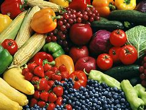

What You Can EatIncorporate a variety of fruits and vegetables into your diet. Whole grains, lean proteins, and healthy fats are essential. Foods like spinach, quinoa, salmon, and avocados are excellent choices. |
|
Diseases from MalnutritionMalnutrition can lead to various diseases such as obesity, diabetes, heart disease, and osteoporosis. A balanced diet is crucial for preventing these conditions. |
 |
What You Should AvoidLimit processed foods, sugary drinks, and excessive salt. Foods high in trans fats and refined sugars can lead to health issues. |
|
Healthy Eating AdvicesPlan your meals, and practice portion control. Eating mindfully can also help you make better food choices. |